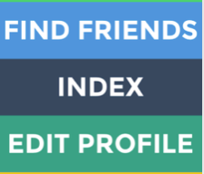

11/14/2014

I recently read an article that said people are gradually stepping away from using SNS services such as Facebook and Twitter. By stepping away, the article probably didn’t mean that people are completely deserting these services but rather that people are less actively using them. (A high proportion of American users use two or more SNS services.)
Snapchat, Whisper, Ello are often referred to as ‘3rd generation SNS’. These new services bare different characteristics from previously existing SNS and are popular among users in their teens and 20’s. Let’s take a look at the 1st and 2nd generation SNS.
We’ve got lots going on these days at Jelly Industries so our
I recently read an article that said people are gradually stepping away from using SNS services such as Facebook and Twitter. By stepping away, the article probably didn’t mean that people are completely deserting these services but rather that people are less actively using them. (A high proportion of American users use two or more SNS services.)
Snapchat, Whisper, Ello are often referred to as ‘3rd generation SNS’. These new services bare different characteristics from previously existing SNS and are popular among users in their teens and 20’s. Let’s take a look at the 1st and 2nd generation SNS.
We’ve got lots going on these days at Jelly Industries so our design team really needed to grow. Continuing along on our lucky streak of incredibly nice and talented people who want to join our little group, we’re fortunate to welcome Steph Bain, most recently UI Design Team Lead at Airbnb.
When Steph joined Airbnb almost four years ago, it was a tiny team just getting started. Most recently, she lead the UI team in a complete redesign of the product across both mobile and web platforms.